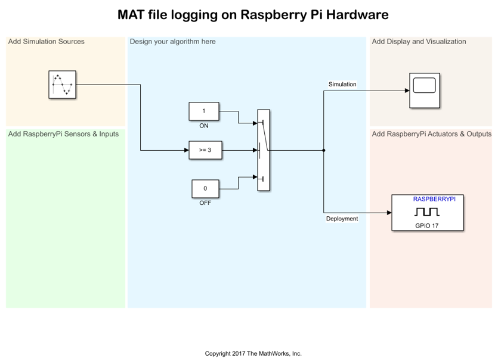

MAT-file logging on Raspberry Pi™ Hardware
This example shows you how to log signals from a Simulink® model on Raspberry Pi™ hardware in the MAT-file format.
Contents
Introduction
The Simulink® Support Package for Raspberry Pi™ Hardware supports logging of signals from your Simulink® model on Raspberry Pi™ hardware in the MAT-file format. Signal logging enables you to monitor the behavior of the signal and perform analysis of historical data. To use the MAT-file logging feature with the Simulink® Support Package for Raspberry Pi™ hardware, you must have a Simulink Coder™ license.
Prerequisites
Before you start with this example, we recommend you to complete the Getting Started with Raspberry Pi® Hardware example.
Required Hardware
To run this example, you must have a Raspberry Pi™ board.
Task 1: Open a Simulink Model Template
The Simulink Support Package for Raspberry Pi™ Hardware provides different Simulink model templates. The models in these templates are pre-configured for you to use with Raspberry Pi™ hardware. You can use these models as a starting point to understand how the MAT-file logging works on Raspberry Pi™ hardware.
1. Open the Simulink Start Page.
2. Scroll down and click the Simulink Support Package for Raspberry Pi™ Hardware template. From the expanded list, click Basic Model to create a new model. This model consists of a Sine Wave source block, a Scope block, and a GPIO block from the Raspberry Pi Simulink library. The Sine Wave block is connected to the Scope block and the GPIO block.
In this example, the signal driving the GPIO block is logged by the Scope block.
3. Save the model.
Task 2: Enable MAT-file Logging
1. To open the Model Configuration Parameters dialog box, click the gear icon on the Simulink model toolbar.
2. Browse to Code Generation > Interface > Advanced Parameters, or type MAT-file logging in the search box.
3. Select the MAT-file logging option and click Apply to save the changes.
4. Click OK to close the dialog box.
5. In the Simulink model, double-click the Scope block, and click the gear icon to open the Configuration Properties dialog box.
6. In the Logging tab, select the Log data to workspace option, and click Apply to save the changes.
7. On the Simulink model toolbar, set the Simulation stop time parameter. This parameter specifies the duration for which the signals are logged. After the simulation stop time elapses, the logging of signals stops. However, your model continues to run. For example, if the Simulation stop time parameter is specified as 10.0 seconds, the signals are logged for 10.0 seconds, and then the logging stops. However, the model continues to run for indefinite time.
Task 3: Configure and Deploy the Model on Raspberry Pi™ hardware.
In this task, you will configure the model to be deployed on the Raspberry Pi™ hardware. As we started with a Raspberry Pi™ template model, the model is already configured.
1. Open the pre-configured model that you saved in Task 1.
2. Select Tools > Run on Target Hardware > Options.... Verify the parameter values in the Hardware Implementation pane.
3. On the Simulink model toolbar, click the Deploy To Hardware button. This action builds, downloads, and runs the model on the Raspberry Pi™ hardware.
Task 4: Import the MAT-files from Raspberry Pi™ Hardware
1. In the MATLAB® command window, use the following command to create a raspberrypi object. The parameters specified in this command should match the board parameters specified in Simulation> Model Configuration Parameters> Target hardware resources> Board Parameters.
r = raspberrypi(<IP address>, <username>, <password>);
2. Use the getFile function to copy the MAT-files from the Raspberry Pi™ board to your computer.
getFile(r,<filename>)
Here, r specifies the raspberrypi object and filename specifies the path and name of the file created.
The model running on Raspberry Pi™ creates multiple MAT-files depending on the duration for which the signals are logged. The files are named as '<modelname>_<runindex>_<fileindex>.mat'. '<modelname>' is the name with which the Simulink® model is saved. '<runindex>' starts with 1 and is incremented by one during successive runs.<fileindex> starts with 1 and is incremented by 1 every time a new MAT file is created in the same run.
To import multiple MAT-files from Raspberry Pi into MATLAB®, use the following function in the MATLAB command window:
getFile(r,<modelname>*.mat)
The '*' character is used to copy all the files having names starting with '<modelname>' and ending with '.mat'.
After importing the MAT-files, you can use it like a regular MAT-file for any further analysis in MATLAB®.
Since the model running on the hardware creates multiple MAT-files, the logged data points are distributed across the generated MAT-files.
You can create a stitcher function to combine these MAT-files into a single MAT-file that contains all the logged data points. An example of the MAT-file stitcher is provided. In the MATLAB® command window, enter the following command and refer the file to know more about its usage.
edit('Raspberrypi_MAT_stitcher.m');
Other things to try
In this example, a Scope block is used to log signals. The signals can also be logged using the To Workspace block or the Output port block.
Try logging signals using these two blocks.
Summary
This example demonstrated how to configure the Simulink model to log signals on Raspberry Pi™ in the MAT-file format.